Análisis Sonic X Shadow Generations, dos aventuras que miran al pasado para hacernos soñar con el futuro (PS5, PC, PS4, Xbox Series X/S, Xbox One, Switch)
Una fantástica colección de dos juegos con la que Sega no solo recupera una de las mejores entregas de Sonic, sino que también sorprende con una aventura completamente nueva protagonizada por Shadow que nos ha encantado.
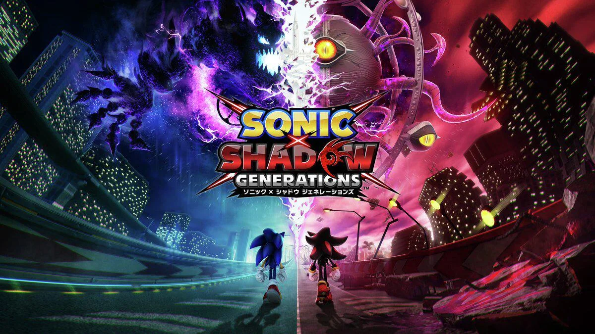
Análisis de versiones PS5, PC, PS4, Xbox Series X/S, Xbox One y Switch.
Tratar a Sonic X Shadow Generations como una simplemente remasterización es un error. Sí, nos permite rejugar una versión remasterizada de la que para muchos es la mejor entrega 3D que ha protagonizado nunca el icónico erizo, pero también trae bajo el brazo un juego completamente nuevo que por fin hace justicia a la figura de Shadow. Y no, no nos referimos solo a un pequeño extra con el que darle valor añadido al producto de cara a quienes ya jugasen el original, sino de una aventura con entidad propia que se ha convertido, automáticamente, en uno de nuestros títulos favoritos de toda la saga. Pero vayamos por partes.
Sonic x Shadow Generations ofrece una experiencia renovada al combinar el clásico Sonic Generations con una nueva campaña enfocada en Shadow. Este juego permite a los fans revivir los momentos icónicos de Sonic mientras exploran la historia oscura de Shadow en un escenario independiente. Las mecánicas de Shadow incluyen el poder de "Chaos Control" para congelar enemigos y acceder a rutas ocultas, lo que añade profundidad a la jugabilidad. Además, el mundo abierto “White Space” expande la experiencia, invitando a la exploración y la recolección de objetos
Su peculiaridad más llamativa y celebrada es que cada una de estas fases consta de dos actos distintos: uno protagonizado por el Sonic clásico y otro por el Sonic moderno. Las primeras son de desarrollo lateral y en lo jugable beben directamente de las entregas de Mega Drive, mientras que las segundas alternan secciones 2D y 3D mientras nos permiten avanzar a toda velocidad usando el turbo y los movimientos más característicos del personaje desde los Sonic Adventure en adelante, como el Homing Attack.
Pese a lo que pudiese parecer, el juego hizo un trabajo excelente en ambos casos, reconciliando en un solo título dos formas muy distintas de entender la saga. Una jugabilidad pulida y satisfactoria que nos permite hacer muchas virguerías una vez la dominamos, un diseño de niveles fantástico, rejugable y repleto de momentazos, rutas alternativas y secretos, una buena cantidad de contenidos y un apartado audiovisual muy competente y espectacular fueron sus principales señas de identidad. Virtudes que, por supuesto, se han mantenido intactas en esta versión.
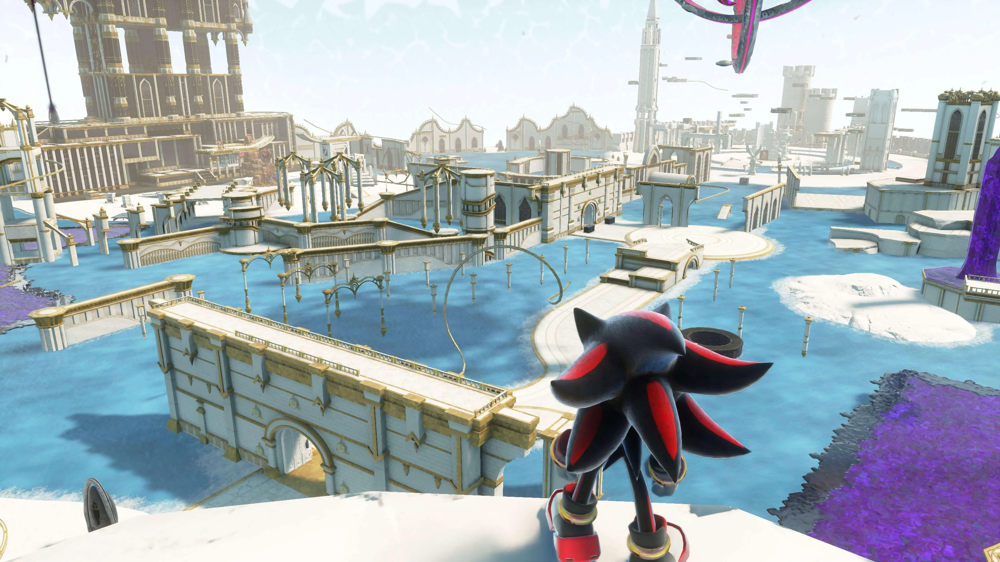
Como remasterización, lo cierto es que no hay mucho que decir, ya que Sonic Team ha preferido limitarse a actualizar sus gráficos a las resoluciones actuales, estandarizar las 60 imágenes por segundo en consolas e introducir pequeños retoques o mejoras de calidad de vida. Entre las novedades más destacadas, tenemos que señalar que ahora ambas versiones de Sonic pueden utilizar el Drop Dash, un movimiento que se introdujo por primera vez en Sonic Mania que nos ha permitido optimizar nuestros tiempos y rutas respecto a la versión original y al que le hemos sacado bastante partido, ayudando a que el desarrollo de las partidas sea más fluido, frenético y satisfactorio que antes si cabe.
Gameplay
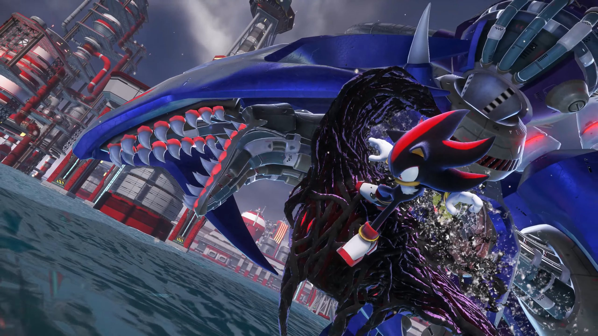
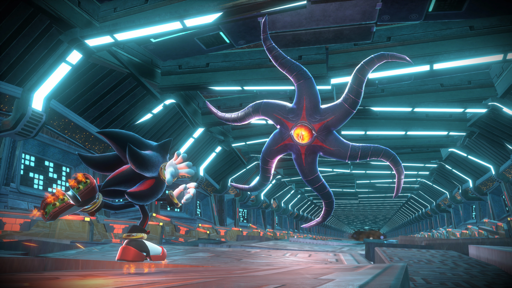
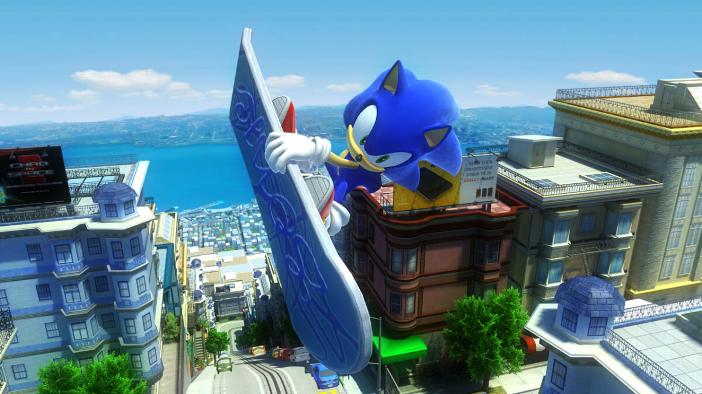
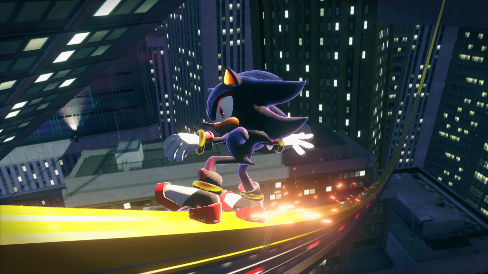
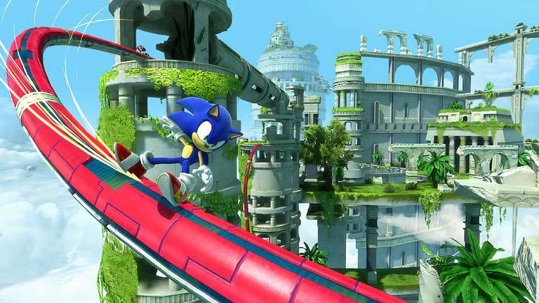
Conclusiones
Sonic X Shadow Generations es un juego prácticamente imprescindible para cualquier fan de este icono de los videojuegos. No solo incluye la remasterización de una de sus mejores entregas hasta la fecha, sino que también nos sorprende con una aventura completamente nueva que con su calidad nos ha hecho soñar con el futuro y desear que tuviese el doble de fases.
Sega fracasó a la hora de hacer justicia a Shadow con el juego que le dedicó en los 128 bits, pero ahora el Sonic Team ha conseguido redimir a este querido personaje por todo lo alto dejándole protagonizar las mejores fases que hemos jugado hasta la fecha en una entrega 3D de la saga. Además, sus nuevos poderes hacen que goce de una jugabilidad mucho más divertida y profunda que la del propio Sonic, los controles están más pulidos que nunca, el Espacio Blanco funciona bastante bien como mundo central, los jefes son epiquísimos y su historia, dentro de su sencillez, está bien escrita y ha sabido emocionarnos.
Si el siguiente juego principal del erizo azul consigue mantener el nivel de calidad, espectacularidad y complejidad de los niveles de Shadow Generations a la vez que termina de pulir la fórmula de zonas abiertas de exploración libre que vimos en Frontiers y con la que aquí han seguido experimentando y probando ideas, estamos convencidos de que ese gran futuro del que Sonic nos habló en 2011 está más cerca que nunca de hacerse realidad.
 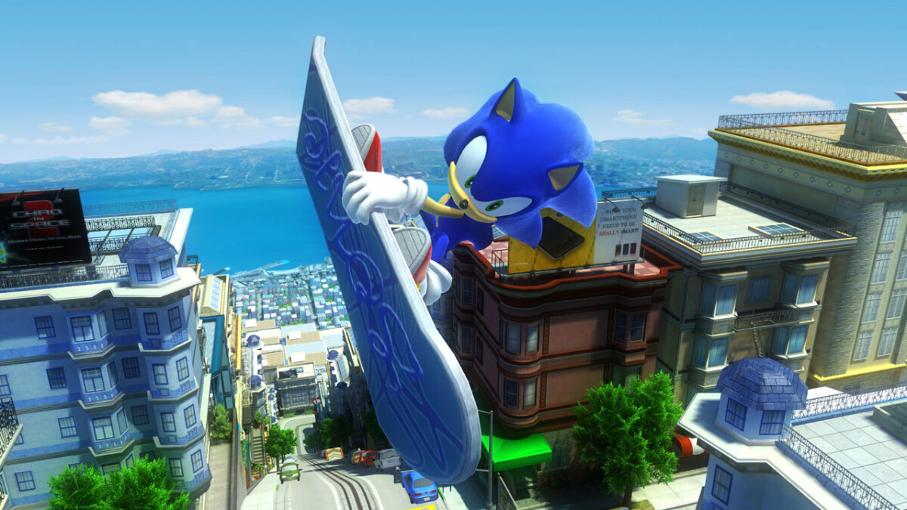
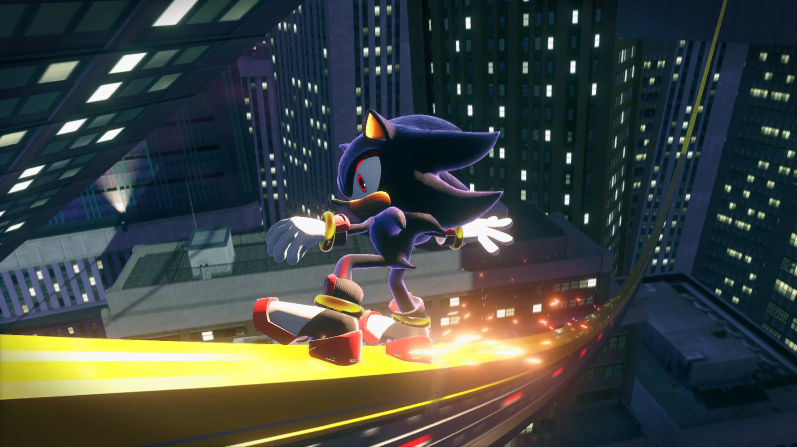
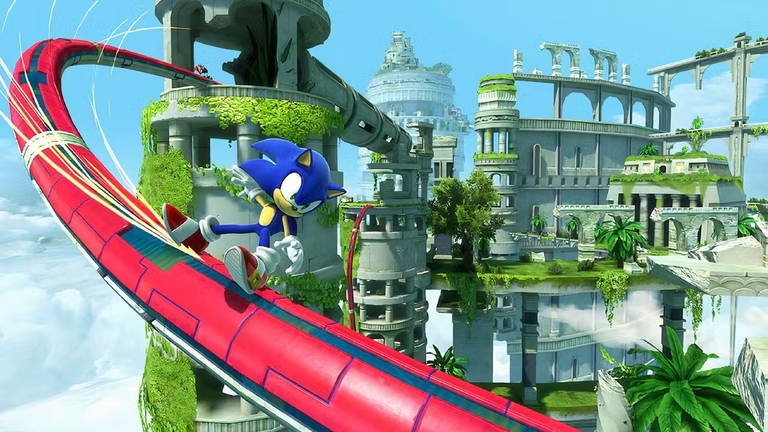
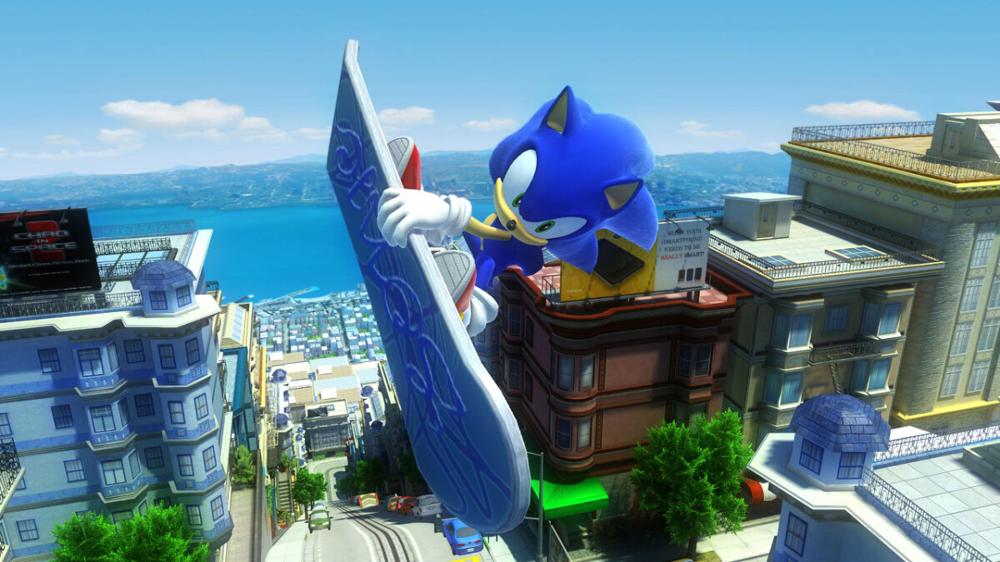
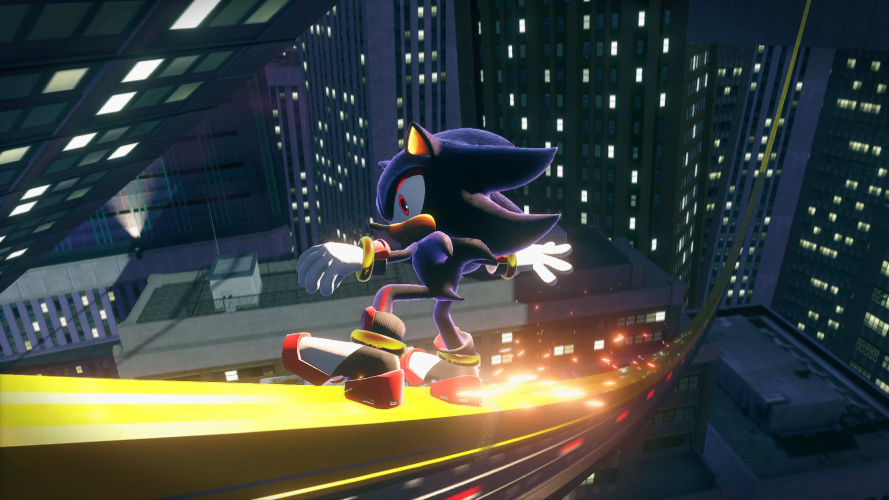
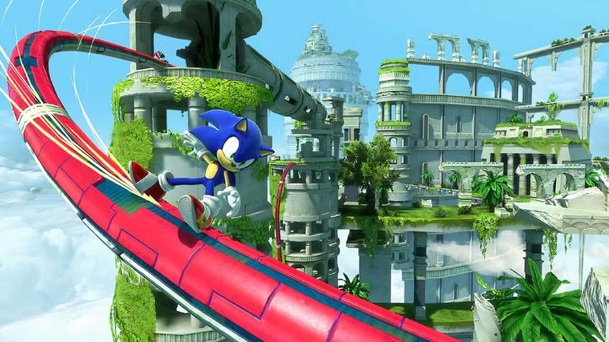